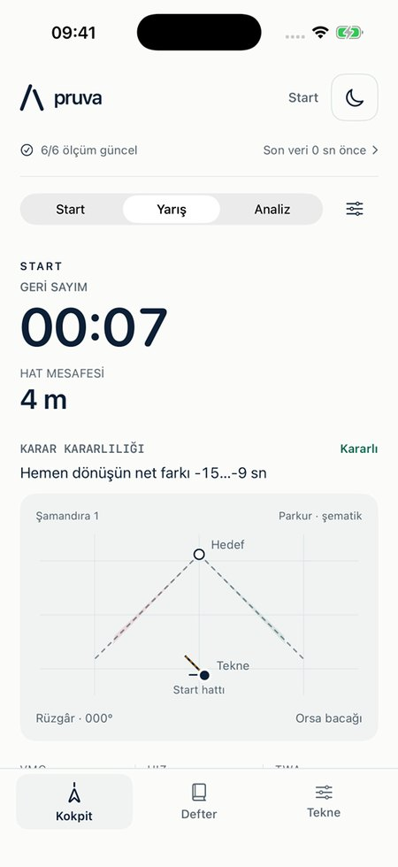
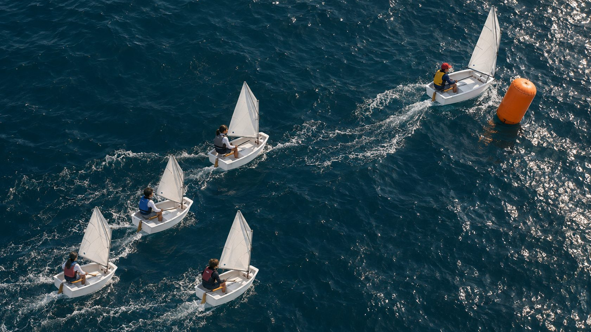
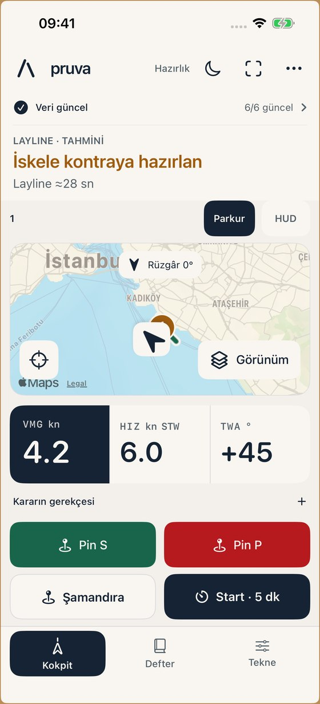
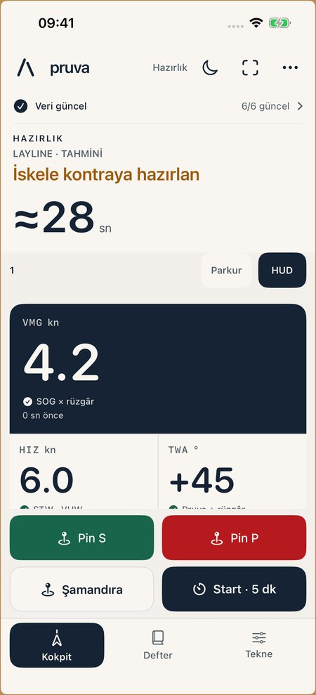
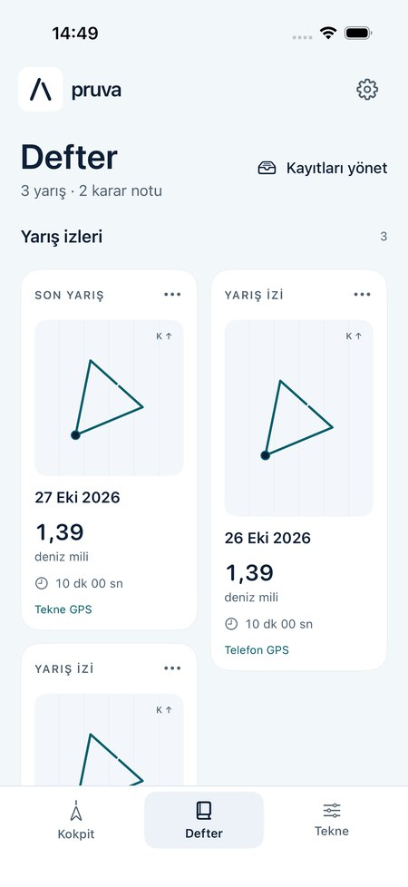
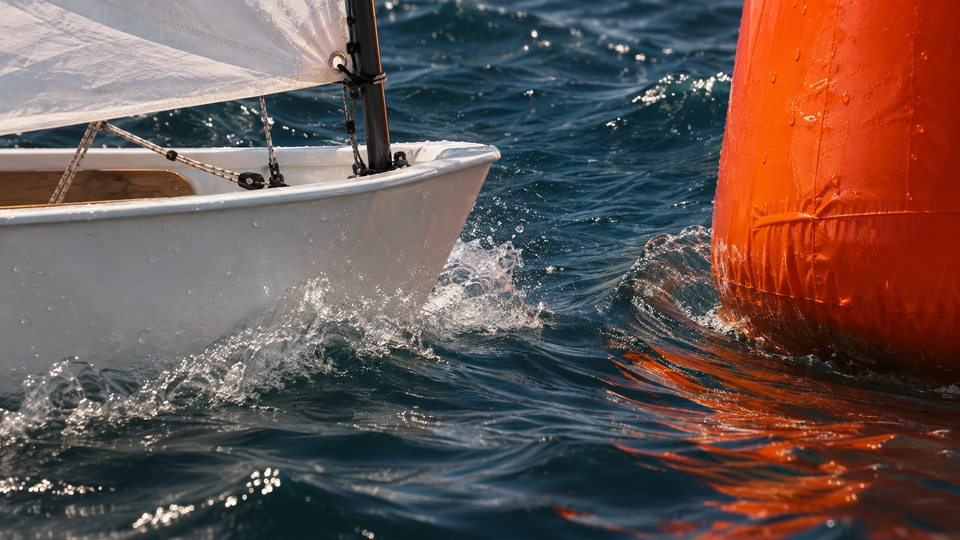

Start sayacı
5 veya 10 dakikalık geri sayımı senkronlayın. GPS ve iki hat ucu hazır olduğunda start hattına mesafenizi görün.

Yelken yarışları için taktik kokpit
Startınızı hazırlayın, seyirde tekne ölçümlerini takip edin ve yarışınızı Defter’e kaydedin.
iPhone · iPad · Apple Watch

Uygulama
Start çizgisine yaklaşırken süreyi görün, yarışta ölçümleri izleyin, karaya dönünce izinizi inceleyin.

5 veya 10 dakikalık geri sayımı senkronlayın. GPS ve iki hat ucu hazır olduğunda start hattına mesafenizi görün.

Uyumlu bir tekne bağlantısıyla hız, pruva ve rüzgâr verilerini izleyin. Taktik hesaplar güncel ölçümlere dayanır.

Yarış izini ve kaydedilen performans ölçümlerini Defter’de inceleyin. İzinizi GPX veya CSV olarak paylaşın.
Kullanım
Tekne ölçümleri için teknenin Wi‑Fi ağına katılın ve Pruva’da Tekne sekmesini açın. Birden fazla uyumlu kaynak bulunursa kullanacağınız kaynağı seçin.
GPS konumu hazırken hattın iki ucunu kaydedin. Start sekmesinde 5 veya 10 dakikalık sayacı başlatıp yarış sinyaliyle senkronlayın.
Kokpitte yarış kaydını başlatın. İz için izin verdiğiniz telefon GPS’i veya uyumlu tekne GPS’i kullanılır.
Finişten sonra kaydı bitirin. Yarış izine, mevcut performans verilerine ve paylaşım seçeneklerine Defter’den ulaşın.
